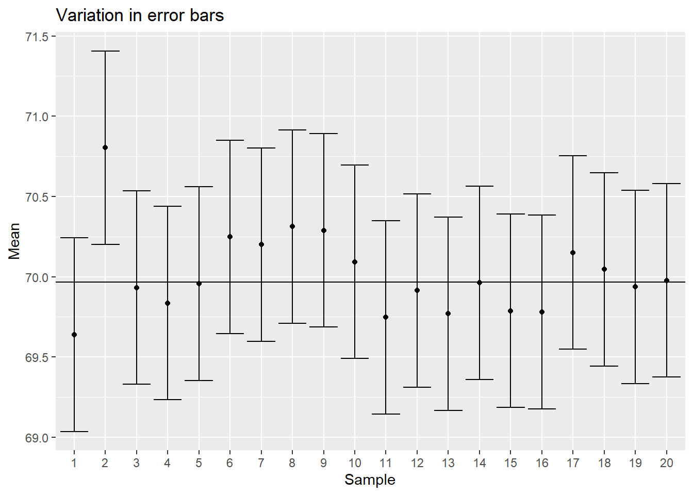

set.seed(42)
population_size <- 10000
population_norm <- data.frame(id = 1:population_size,
height = rnorm(population_size, 70, 3))Estimation and uncertainty
Working with a sample
Now that we can describe data distributions, we want to start thinking about how we quantify the uncertainty in our estimates (of \(\mu\), for example). Remember, we typically want to describe a population but need to rely on a sample, and we’ve already talked about sampling error. So now we just want to think about how much error we typically have (or, alternatively, how precise are our estimates).
Answering this question is hard. Quantifying sampling error requires you to know the “true” value for a population parameter, but we only have estimates! Statisticians solve this problem by investigating sampling error in populations they fully know because they created them.
Let’s start with an example
For example, let’s assume we measure all the males in a population. Furthermore, let’s assume the distribution of heights is normal. Remember, this means the distribution is roughly symmetric, with tails on either side. Values near the middle of the range are more common, with the chance of getting smaller or larger values declining at an increasing rate. In fact, in turns out ~95% of the data lies within two standard deviations (remember those?) of the mean (so we calculate the mean and then the standard deviation. We then subtract the standard deviation from the mean to find a lower bound. We then add the standard deviation from the mean to find an upper bound. These bounds denote where 95% of the data points will be found).
Let’s see this in action. First, lets make a population with a trait (let’s assume height, measured in cm, that follows a normal distribution. We can set the mean to 70 and the standard deviation to 3.
Now’s let graph it.
library(ggplot2)
ggplot(population_norm, aes(height)) +
geom_histogram(color="black") +
labs(x="Height (cm)", y= "Frequency",
title = "Height of all males in our fake population")`stat_bin()` using `bins = 30`. Pick better value with `binwidth`.
Now let’s add the mean (69.97 cm) and mark two standard deviations (sd = 3.02 in) above and below it. Remember we noted a benefit of using standard deviations to describe spread was that they were in the same units as the mean? Now we can use that!
colors <- c("mean" = "black", "2 standard deviations below" = "red",
"2 standard deviations above" = "green")
ggplot(population_norm, aes(height)) +
geom_histogram(color="black") +
labs(x="Height (cm)", y= "Frequency",
title = "Height of all males in our fake population",
color="Measure") +
geom_vline(aes(xintercept=mean(height), color="mean"))+
geom_vline(aes(xintercept=mean(height)-
2*sd(height), color="2 standard deviations below"))+
geom_vline(aes(xintercept=mean(height)+
2*sd(height), color="2 standard deviations above")) +
scale_color_manual(values = colors)+
annotate("text", label = "mean", y = 1200, x = mean(population_norm$height), color = "black") +
annotate("text", label = "2 standard deviations \n below", y = 1200, x = mean(population_norm$height)-
2*sd(population_norm$height), color = "red")+
annotate("text", label = "2 standard deviations \n above", y = 1200, x = mean(population_norm$height)+
2*sd(population_norm$height), color = "green")`stat_bin()` using `bins = 30`. Pick better value with `binwidth`.
This bound captures 95.53% of the data.
Now let’s sample the population. We’ll start by drawing a sample of 100 from the population. This is true random sampling, so any differences are due to sampling error.
sample_1 <- population_norm[sample(nrow(population_norm), 100),]
ggplot(sample_1, aes(height)) +
geom_histogram(color="black") +
labs(x="Height (cm)", y= "Frequency",
title = "Height of 100 random males in our fake population")`stat_bin()` using `bins = 30`. Pick better value with `binwidth`.
For this sample, we have a mean of 69.78 cm and a standard deviation of 3.11 cm.
Moving to a sample of means
Here’s the tricky part. We typically only have one sample, but we want to discuss the uncertainty in our estimate. So, let’s explore this by drawing multiple samples (each of 100 individuals) from our population and finding the mean for each sample.
number_of_samples <- 1000
sample_outcomes_1 <- data.frame(mean = rep(NA, number_of_samples), sd = NA)
for (i in 1:number_of_samples){
sample_1 <- population_norm[sample(nrow(population_norm), 100),]
sample_outcomes_1$mean[i] <- mean(sample_1$height)
sample_outcomes_1$sd[i] <- sd(sample_1$height)
}Then let’s plot the means.
ggplot(sample_outcomes_1, aes(mean)) +
geom_histogram(color="black") +
labs(x="Height (cm)", y= "Frequency",
title = "Mean heights from our samples (n = 100)",
color="Measure") +
geom_vline(aes(xintercept=mean(mean), color="mean"))+
geom_vline(aes(xintercept=mean(mean)-
2*sd(mean), color="2 standard deviations below"))+
geom_vline(aes(xintercept=mean(mean)+
2*sd(mean), color="2 standard deviations above")) +
scale_color_manual(values = colors)+
annotate("text", label = "mean", y = 150, x = mean(sample_outcomes_1$mean), color = "black") +
annotate("text", label = "2 standard deviations \n below", y = 150, x = mean(sample_outcomes_1$mean)-
2*sd(sample_outcomes_1$mean), color = "red")+
annotate("text", label = "2 standard deviations \n above", y = 150, x = mean(sample_outcomes_1$mean)+
2*sd(sample_outcomes_1$mean), color = "green")`stat_bin()` using `bins = 30`. Pick better value with `binwidth`.
For our sample of means (this should sound weird!), we have a mean of 69.98 in and a standard deviation of 0.3 cm
Note this suggests the mean of our means is close to the true population value of \(\mu\). But the spread of our means (their standard deviation) is much less than the spread of the actual population! How much less? Let’s consider a set of smaller samples (n = 20).
sample_outcomes_2 <- data.frame(mean = rep(NA, number_of_samples), sd = NA)
for (i in 1:number_of_samples){
sample_2 <- population_norm[sample(nrow(population_norm), 20),]
sample_outcomes_2$mean[i] <- mean(sample_2$height)
sample_outcomes_2$sd[i] <- sd(sample_2$height)
}
ggplot(sample_outcomes_2, aes(mean)) +
geom_histogram(color="black") +
labs(x="Height (cm)", y= "Frequency",
title = "Mean heights from our samples (n = 20)",
color="Measure") +
geom_vline(aes(xintercept=mean(mean), color="mean"))+
geom_vline(aes(xintercept=mean(mean)-
2*sd(mean), color="2 standard deviations below"))+
geom_vline(aes(xintercept=mean(mean)+
2*sd(mean), color="2 standard deviations above")) +
scale_color_manual(values = colors)+
annotate("text", label = "mean", y = 150, x = mean(sample_outcomes_2$mean), color = "black") +
annotate("text", label = "2 standard deviations \n below", y = 150, x = mean(sample_outcomes_2$mean)-
2*sd(sample_outcomes_2$mean), color = "red")+
annotate("text", label = "2 standard deviations \n above", y = 150, x = mean(sample_outcomes_2$mean)+
2*sd(sample_outcomes_2$mean), color = "green")`stat_bin()` using `bins = 30`. Pick better value with `binwidth`.
This new sample of means has a mean of 69.96 in and a standard deviation of 0.66 cm So, the estimate for \(\mu\) is still close to the same, but the standard deviation of our estimates is growing.
This is even more clear if we sample only 5 individuals.
sample_outcomes_3 <- data.frame(mean = rep(NA, number_of_samples), sd = NA)
for (i in 1:number_of_samples){
sample_3 <- population_norm[sample(nrow(population_norm), 5),]
sample_outcomes_3$mean[i] <- mean(sample_3$height)
sample_outcomes_3$sd[i] <- sd(sample_3$height)
}
ggplot(sample_outcomes_3, aes(mean)) +
geom_histogram(color="black") +
labs(x="Height (cm)", y= "Frequency",
title = "Mean heights from our samples (n = 5)",
color="Measure") +
geom_vline(aes(xintercept=mean(mean), color="mean"))+
geom_vline(aes(xintercept=mean(mean)-
2*sd(mean), color="2 standard deviations below"))+
geom_vline(aes(xintercept=mean(mean)+
2*sd(mean), color="2 standard deviations above")) +
scale_color_manual(values = colors)+
annotate("text", label = "mean", y = 150, x = mean(sample_outcomes_3$mean), color = "black") +
annotate("text", label = "2 standard deviations \n below", y = 150, x = mean(sample_outcomes_3$mean)-
2*sd(sample_outcomes_3$mean), color = "red")+
annotate("text", label = "2 standard deviations \n above", y = 150, x = mean(sample_outcomes_3$mean)+
2*sd(sample_outcomes_3$mean), color = "green")`stat_bin()` using `bins = 30`. Pick better value with `binwidth`.
where we find a mean of 69.97 in and a standard deviation of 1.33 cm.
If we facet the graphs (and let them share an x-axis) we can see this even better
sample_outcomes_1$n=100
sample_outcomes_2$n=20
sample_outcomes_3$n=5
samples_all <- rbind(sample_outcomes_1,sample_outcomes_2, sample_outcomes_3)
ggplot(samples_all, aes(mean)) +
geom_histogram(color="black") +
labs(x="Height (cm)", y= "Frequency",
title = "Mean heights from our samples",
color="Measure") + facet_wrap(~n, ncol=1)`stat_bin()` using `bins = 30`. Pick better value with `binwidth`.
You can clearly see larger sample sizes lead to a more “clustered’ group of means (so there is less uncertainty in the measurements!). This is why larger estimates make us more confident in our estimates - the means we get are less likely to be far away! In other words, larger samples yield more precise estimates with lower spread (lower sampling error).
We call the standard deviation of our means the standard error. We can calculate this as
\[ [\sigma_{\overline{Y}} = \frac{\sigma}{\sqrt{n}}] \sim [s_{\overline{Y}} = \frac{s}{\sqrt{n}}] \]
Also, note distribution of means was normal (which we will define even better in a few lectures!). For now, that means we can get 95% of the sample means within ~2 standard deviations of the mean of means, which is very close to the true mean. Conversely, if we use data from each sample to generate a an interval ~2 standard deviations above and below each sample mean, these intervals will contain the true mean 95% of the time. We call this range a 95% confidence interval. For example, let’s take take 20 samples of 100 individuals from our fake population, then calculate and plot their confidence intervals.
number_of_samples <- 20
sample_outcomes <- data.frame(mean = rep(NA, number_of_samples), sd = NA, se = NA)
for (i in 1:number_of_samples){
sample_1 <- population_norm[sample(nrow(population_norm), 100),]
sample_outcomes$mean[i] <- mean(sample_1$height)
sample_outcomes$sd[i] <- sd(sample_1$height)
sample_outcomes$se <- sd(sample_1$height)/sqrt(100)
}
sample_outcomes$sample <- as.factor(1:number_of_samples)
ggplot(sample_outcomes
, aes(x=sample, y=mean)) +
geom_point() +
geom_errorbar(aes(ymin=mean-(2*se), ymax=mean+(2*se)))+
geom_hline(aes(yintercept=mean(population_norm$height))) +
ylab("Mean")+
xlab("Sample")+
ggtitle("Variation in error bars")
Notice one of samples (#2) has a range that does not include the true mean of the population!
A few other notes about confidence intervals
Confidence interval for normally-distributed samples (like those described here!) should be symmetric around the mean. This will change slightly for non-normal data (which we may address with generalized linear models that use a binomial, Poisson, or gamma distribution).
The “~2” is based on sample size. The value actually trends towards 1.96 at large sample sizes, but at sample sizes over ten 2 is a good estimate. You may also here this total (the 2 multiplied by the standard error) referred to as the margin of error. We could also have other numbers. For example, we could have a 90% confidence interval.
Would it be wider or narrower compared to a 95% interval?
If you are less confident in the interval (90% vs 95%), the interval itself will get smaller (only 90% of samples need to have the true mean!)
Confidence bounds also exist. These are slightly different - we’ll explain them in a few chapters.
(more complicated) Note these calculations assumes we have lots of samples, but we typically only have one. The average probability of the first 95% CI capturing the true sample mean is only around 83%
Need to see this another way?
These two simulations (produced by UBC) will allow you to see this another way!
What if the population isn’t normal?
Finally, it turns out the underlying distribution of data doesn’t matter; only that of the trait we are focused on does. For example, the means of the data will be normally distributed as long as you have a large sample size. This is know as the central limit theorem.
To prove this, let’s instead consider a uniform distribution:
population_unif <- data.frame(id = 1:population_size,
height = runif(population_size, 60, 80))
ggplot(population_unif, aes(height)) +
geom_histogram(color="black") +
labs(x="Height (cm)", y= "Frequency",
title = "Height of all males in our fake population")`stat_bin()` using `bins = 30`. Pick better value with `binwidth`.
Now, let’s do what we did above. First, draw a sample of 100
sample_unif <- population_unif[sample(nrow(population_unif), 100),]
ggplot(sample_unif, aes(height)) +
geom_histogram(color="black") +
labs(x="Height (cm)", y= "Frequency",
title = "Height of 100 random males in our fake population")`stat_bin()` using `bins = 30`. Pick better value with `binwidth`.
Note the sample is still relatively uniformly distributed. This makes sense. In general, a good sample should resemble the underlying population, so this makes sense.
Now let’s sample a 100 of these numerous times and plot the means of each sample.
number_of_samples <- 1000
sample_outcomes_unif <- data.frame(mean = rep(NA, number_of_samples), sd = NA)
for (i in 1:number_of_samples){
sample_unif <- population_norm[sample(nrow(population_unif), 100),]
sample_outcomes_unif$mean[i] <- mean(sample_unif$height)
sample_outcomes_unif$sd[i] <- sd(sample_unif$height)
}
ggplot(sample_outcomes_unif, aes(mean)) +
geom_histogram(color="black") +
labs(x="Height (cm)", y= "Frequency",
title = "Mean heights from our samples (n = 100)",
color="Measure") +
geom_vline(aes(xintercept=mean(mean), color="mean"))+
geom_vline(aes(xintercept=mean(mean)-
2*sd(mean), color="2 standard deviations below"))+
geom_vline(aes(xintercept=mean(mean)+
2*sd(mean), color="2 standard deviations above")) +
scale_color_manual(values = colors)+
annotate("text", label = "mean", y = 150, x = mean(sample_outcomes_unif$mean), color = "black") +
annotate("text", label = "2 standard deviations \n below", y = 150, x = mean(sample_outcomes_unif$mean)-
2*sd(sample_outcomes_unif$mean), color = "red")+
annotate("text", label = "2 standard deviations \n above", y = 150, x = mean(sample_outcomes_unif$mean)+
2*sd(sample_outcomes_unif$mean), color = "green")`stat_bin()` using `bins = 30`. Pick better value with `binwidth`.
Notice we are back to a normal distribution!
Need to see this another way?
Another UBC visualization will allow you to see this another way!
Visualization issues
As you can see above, 95% confidence intervals are commonly graphed to show the potential spread of mean values. This distinction is important, as one could plot the standard deviation of the raw the data, the standard error of the related means, or the 95% confidence interval. These can be very different. As an example,let’s return to our normal population.
number_of_samples <- 1
sample_outcomes <- data.frame(mean = rep(NA, number_of_samples), sd = NA, se = NA)
for (i in 1:number_of_samples){
sample_1 <- population_norm[sample(nrow(population_norm), 100),]
sample_outcomes$mean[i] <- mean(sample_1$height)
sample_outcomes$sd[i] <- sd(sample_1$height)
sample_outcomes$se <- sd(sample_1$height)/sqrt(100)
}
sample_outcomes$sample <- as.factor(1:number_of_samples)
sample_1$sample <- "Data"
sample_1$data <- sample_1$height
onese <- sample_outcomes
onese$sample <- "+- 1 standard error"
onese$data <- onese$mean
onese$bar_length <- onese$se
twosd <- sample_outcomes
twosd$sample <- "+- 2 standard error ~ \n 95% confidence interval"
twosd$data <- twosd$mean
twosd$bar_length <- onese$se * 2
onesd <- sample_outcomes
onesd$sample <- "+- 1 standard deviation"
onesd$data <- onesd$mean
onesd$bar_length <- onese$sd
example_clarity <- merge(sample_1, onese, all.x =T, all.y = T)
example_clarity <- merge(example_clarity, twosd, all.x =T, all.y = T)
example_clarity <- merge(example_clarity, onesd, all.x =T, all.y = T)
library(plyr)
example_clarity$sample <- relevel(as.factor(example_clarity$sample), "Data")
ggplot(example_clarity
, aes(x=sample, y=data)) +
geom_point() +
geom_errorbar(aes(ymin=mean-bar_length, ymax=mean+bar_length))+
labs(y ="Height (cm)", x= "Frequency",
title = "Variation in error bar display")
Notice the differences! We will typically use 95% confidence intervals in class, but you should always specify in your captions and note when you read other papers!
Visualizations of spread are commonly used with bar graphs (despite the earlier issues we noted with bar graphs!). For example, we can return to our iris data and add
library(Rmisc)
function_output <- summarySE(iris, measurevar="Sepal.Length", groupvars =
c("Species"))
ggplot(function_output, aes(y=Sepal.Length, x=Species, fill=Species)) +
geom_col(aes(fill=Species)) +
geom_errorbar(aes(ymin=Sepal.Length-ci, ymax=Sepal.Length+ci)) +
labs(title=expression(paste("Sepal lengths of ",italic("I. species"))),
y= "Sepal length (cm)",
x= "Species")
In general, presenting the estimate for a parameter and measures of sampling error (or uncertainty) allow you to state the magnitude of a statistic. This is a different but related approach to the more commonly observed p-values (which we’ll get to!). For example, for a single population we can ask if the confidence interval includes a relevant value (like 0!). For multiple groups,we can consider if the true means are in the same range by looking at overlap in confidence intervals among the groups.
Next steps
In this chapter we’ve started to talk about probability. In the next we will review some probability basics before we move onto testing hypotheses.